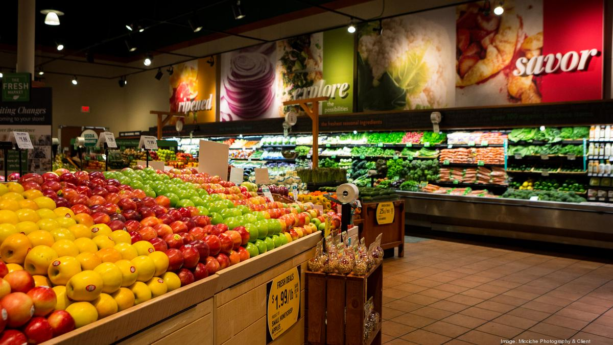

Exploring the Fresh Produce Section of a Supermarket
The the well-organized supermarket. Rows of neatly stacked apples, oranges, and greens are displayed under warm lighting, creating a visually appealing and inviting atmosphere.
The the well-organized supermarket. Rows of neatly stacked apples, oranges, and greens are displayed under warm lighting, creating a visually appealing and inviting atmosphere.
This image captures the essence of a well-stocked shopping cart, filled with a variety of grocery items. From breakfast cereals to pasta, snacks, and beverages, the cart showcases a selection of everyday essentials.

This image showcases the vibrant and diverse selection of fresh vegetables neatly displayed in a supermarket aisle. The bright colors of tomatoes, peppers, and greens are arranged in an appealing and organized manner, making it easy for shoppers to pick their preferred produce.